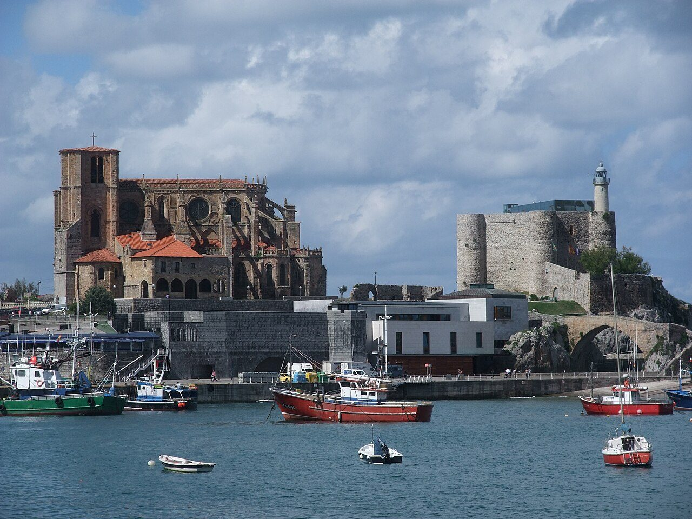

Seres del agua y del cielo
Criterios: PC 4.1, PC 7.3
🤔 Pienso5 min
Qué hago aquí: Piensa un momento y contesta con lo que ya sabes. No pasa nada si no lo sabes: es para empezar.
Para un pescador de hace doscientos años, ¿qué era lo más peligroso del mar? ¿Y para un labrador, del cielo?
📖 Leo y aprendo15 min
Qué hago aquí: Lee despacio, mira los dibujos y los ejemplos, y quédate con la idea clave del final.
Cantabria vive entre el mar y la montaña. El mar daba de comer, pero se llevaba barcos y vidas. El cielo traía la lluvia que hace crecer la hierba, pero también el granizo que arruina la cosecha. De esos miedos nacieron sus seres.

Foto: Javi Guerra Hernando · CC BY-SA 4.0 · Castro Urdiales (Cantabria)-Iglesia de Santa María, Castillo de Santa Ana y Puente medieval.JPG
señor de las nubes; trae tormentas y granizo
espíritu del viento con alas verdes; ayuda a los pescadores viejos
caballitos voladores que la noche de San Juan estropean las flores
jóvenes que peinan sus cabellos en ríos y fuentes
✏️ Hago25 min
Qué hago aquí: Haz las actividades en orden. Empieza siempre por las básicas.
Explica de qué miedos reales nacen los seres del agua y del cielo. Relaciona cada ser con el peligro que representa.
Explica el toque a nublo: qué era, por qué se hacía y qué explicación científica tiene que no sirviera para alejar la tormenta.
Compara la Sirenuca con las sirenas griegas: aspecto, canto y efecto sobre los marineros.
La leyenda de la Sirenuca tiene una enseñanza para los jóvenes. ¿Cuál es? ¿Te parece justa? Razona.
Relaciona el Nuberu con lo que aprendiste del clima en la unidad 1 (galernas, tormentas de verano, granizo). ¿En qué época del año sería más temido y por qué?
Escribe el diálogo entre un pescador de Castro Urdiales de 1800 y un meteorólogo de hoy sobre una galerna. Cada uno explica lo que pasa a su manera.
Busca la Sirenuca en Castro Urdiales (en un mapa o en fotos). ¿Cómo aparece hoy la leyenda en el paisaje urbano (esculturas, nombres, rutas)?
🚀 Amplío (si quieres saber más)
Qué hago aquí: ¿Has terminado? Lee la curiosidad o elige el reto. Es voluntario.
Investiga qué otros pueblos de Europa tocaban las campanas contra las tormentas y por qué se prohibió o abandonó esa costumbre. Explica qué patrimonio inmaterial (toques, campaneros, creencias) se ha perdido y si merece la pena recuperarlo.
✅ Compruebo5 min
Qué hago aquí: Contesta sin mirar la ficha y marca cómo lo llevas.